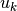
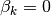

statsmodels.discrete.discrete_model.MultinomialModel.fit_regularized¶
-
MultinomialModel.fit_regularized(start_params=None, method='l1', maxiter='defined_by_method', full_output=1, disp=1, callback=None, alpha=0, trim_mode='auto', auto_trim_tol=0.01, size_trim_tol=0.0001, qc_tol=0.03, **kwargs)[source]¶ Fit the model using a regularized maximum likelihood. The regularization method AND the solver used is determined by the argument method.
Parameters: start_params : array-like, optional
Initial guess of the solution for the loglikelihood maximization. The default is an array of zeros.
method : ‘l1’ or ‘l1_cvxopt_cp’
See notes for details.
maxiter : Integer or ‘defined_by_method’
Maximum number of iterations to perform. If ‘defined_by_method’, then use method defaults (see notes).
full_output : bool
Set to True to have all available output in the Results object’s mle_retvals attribute. The output is dependent on the solver. See LikelihoodModelResults notes section for more information.
disp : bool
Set to True to print convergence messages.
fargs : tuple
Extra arguments passed to the likelihood function, i.e., loglike(x,*args)
callback : callable callback(xk)
Called after each iteration, as callback(xk), where xk is the current parameter vector.
retall : bool
Set to True to return list of solutions at each iteration. Available in Results object’s mle_retvals attribute.
alpha : non-negative scalar or numpy array (same size as parameters)
The weight multiplying the l1 penalty term
trim_mode : ‘auto, ‘size’, or ‘off’
If not ‘off’, trim (set to zero) parameters that would have been zero if the solver reached the theoretical minimum. If ‘auto’, trim params using the Theory above. If ‘size’, trim params if they have very small absolute value
size_trim_tol : float or ‘auto’ (default = ‘auto’)
For use when trim_mode == ‘size’
auto_trim_tol : float
For sue when trim_mode == ‘auto’. Use
qc_tol : float
Print warning and don’t allow auto trim when (ii) (above) is violated by this much.
qc_verbose : Boolean
If true, print out a full QC report upon failure
Notes
Extra parameters are not penalized if alpha is given as a scalar. An example is the shape parameter in NegativeBinomial nb1 and nb2.
Optional arguments for the solvers (available in Results.mle_settings):
'l1' acc : float (default 1e-6) Requested accuracy as used by slsqp 'l1_cvxopt_cp' abstol : float absolute accuracy (default: 1e-7). reltol : float relative accuracy (default: 1e-6). feastol : float tolerance for feasibility conditions (default: 1e-7). refinement : int number of iterative refinement steps when solving KKT equations (default: 1).
Optimization methodology
With
 the negative log likelihood, we solve the convex but
non-smooth problem
the negative log likelihood, we solve the convex but
non-smooth problemvia the transformation to the smooth, convex, constrained problem in twice as many variables (adding the “added variables” )
subject to
With the derivative of
in the
parameter direction, theory dictates that, at the
minimum, exactly one of two conditions holds:- and
- and 